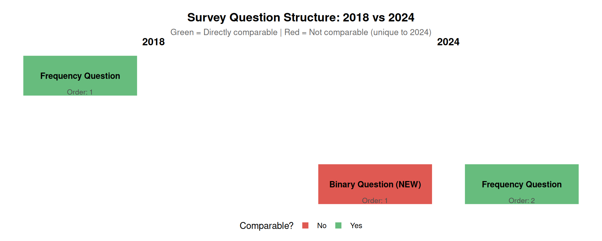
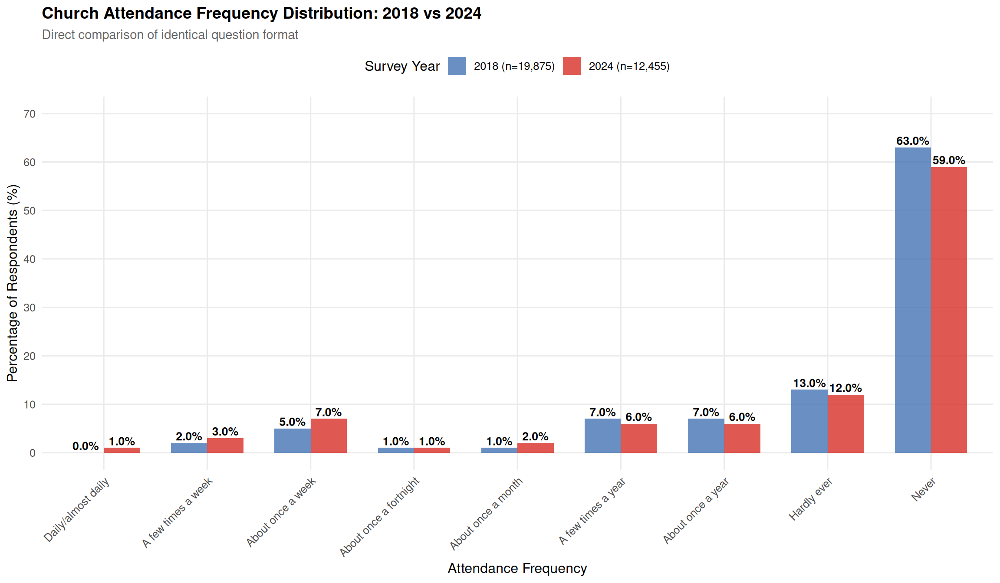

Show the code
# Load survey metadata
survey_meta <- read_csv(here::here("data/bible-society-uk-revival/processed/survey-metadata.csv"),
comment = "#")Comprehensive comparison of 2018 and 2024 survey responses
This document provides a comprehensive, descriptive comparison of all survey questions common to both the 2018 and 2024 YouGov surveys on church attendance in the UK. The focus here is on presenting the data clearly, showing what was asked and how responses differed between the two time points.
Important context: This analysis presents the survey data as reported. However, when compared with actual church attendance records, significant discrepancies emerge. See Survey Claims vs Church Records for a detailed comparison showing that:
For immigration context that may explain apparent changes, see Demographic Analysis.
| survey_year | sample_size_unweighted | sample_size_weighted | fieldwork_start | fieldwork_end | survey_methodology | key_question | response_scale |
|---|---|---|---|---|---|---|---|
| 2018 | 19101 | 19875 | 2018-10-11 | 2018-11-13 | YouGov online panel | Apart from weddings, baptisms/christenings, and funerals how often, if at all, did you go to a church service in the last year? | Daily/almost daily; A few times a week; About once a week; About once a fortnight; About once a month; A few times a year; About once a year; Hardly ever; Never |
| 2024 | 13146 | 12455 | 2024-11-04 | 2024-12-02 | YouGov online panel | Church service (with binary: Yes - in the past year; Yes - more than a year ago; Never); ALSO frequency question | Binary first, then frequency scale same as 2018 |
characteristics <- tibble(
Characteristic = c(
"Survey Organisation",
"Survey Type",
"Fieldwork Period",
"Sample Size (Unweighted)",
"Sample Size (Weighted)",
"Primary Question Topic"
),
`2018` = c(
"YouGov",
"Online panel",
"11 Oct - 13 Nov 2018",
format(survey_meta$sample_size_unweighted[1], big.mark = ","),
format(survey_meta$sample_size_weighted[1], big.mark = ","),
"Church attendance frequency"
),
`2024` = c(
"YouGov",
"Online panel",
"4 Nov - 2 Dec 2024",
format(survey_meta$sample_size_unweighted[2], big.mark = ","),
format(survey_meta$sample_size_weighted[2], big.mark = ","),
"Church attendance (binary + frequency)"
)
)
kable(characteristics, caption = "Survey characteristics comparison")| Characteristic | 2018 | 2024 |
|---|---|---|
| Survey Organisation | YouGov | YouGov |
| Survey Type | Online panel | Online panel |
| Fieldwork Period | 11 Oct - 13 Nov 2018 | 4 Nov - 2 Dec 2024 |
| Sample Size (Unweighted) | 19,101 | 13,146 |
| Sample Size (Weighted) | 19,875 | 12,455 |
| Primary Question Topic | Church attendance frequency | Church attendance (binary + frequency) |
Note: The 2024 survey has 37.3% fewer respondents than 2018.
Central Limit Theorem Implications:
According to the Central Limit Theorem, with sufficiently large sample sizes, the sampling distribution of proportions approaches a normal distribution, allowing us to make reliable statistical inferences. Both surveys have sample sizes well above the typical threshold (n ≥ 30) required for the CLT to apply.
Statistical Precision Comparison:
| Survey | Sample Size | Margin of Error (95% CI) | With Design Effect (1.5) |
|---|---|---|---|
| 2018 | 19,875 | ±0.70% | ±0.85% |
| 2024 | 12,455 | ±0.88% | ±1.08% |
Key Points:
Both samples are statistically adequate: With n > 12,000 in both surveys, the Central Limit Theorem ensures the sampling distributions are approximately normal, providing robust statistical properties.
Minimal precision loss: The 2024 survey has a margin of error only ~0.18 percentage points wider than 2018. This difference is negligible for practical purposes.
Design effect adjustment: Assuming a design effect of 1.5 (typical for online panel surveys), effective sample sizes are still large (13,250 and 8,303 respectively), with margins of error remaining under 1%.
Representativeness vs. Precision: The more important concern is not statistical precision (both surveys are precise) but representativeness:
Selection bias risk: The substantial reduction in sample size may indicate differential non-response or systematic changes in who participates in the survey. This could affect representativeness even though statistical precision remains high.
Conclusion: From a pure Central Limit Theorem perspective, both sample sizes are excellent and provide similar statistical precision. However, the unexplained 31% reduction raises questions about potential changes in survey methodology or response patterns that could affect comparability between the two time points.
This section examines how many questions about church attendance were asked in each survey and which questions are comparable.
| Survey Year | Number of Church Attendance Questions | Question Types |
|---|---|---|
| 2018 | 1 | Frequency only |
| 2024 | 2 | Binary + Frequency |
| Common Questions | 1 | Frequency question |
2018 Survey (1 question):
2024 Survey (2 questions):

Direct Comparability: Only 1 out of 2 questions from the 2024 survey is directly comparable to 2018 (the frequency question)
Question Order Changed: Even the comparable frequency question appears in a different context:
New Binary Question: The 2024 binary question provides additional data not available in 2018, but also introduces potential question order effects
Methodological Implication: The change from 1 question (2018) to 2 questions (2024) means:
Conclusion: While both surveys include a frequency question with identical response categories, the 2024 survey’s addition of a binary question asked first creates a different response context. This means only partial comparability exists between the two surveys.
This section provides a comprehensive inventory of ALL questions asked in both the 2018 and 2024 surveys, showing which questions are common and which are unique to each survey.
Based on the survey documentation, both surveys covered multiple topics related to religion and church attendance. Below is a complete comparison:
| Category | Question Topic | 2018 | 2024 | Comparable? | Data Available |
|---|---|---|---|---|---|
| Church Attendance | Frequency of church service attendance (past year) | Yes | Yes | Partial* | Yes |
| Church Attendance | Ever attended church service (binary) | No | Yes | No | Yes (2024 only) |
| Church Attendance | When last attended (if not in past year) | No | Yes | No | Yes (2024 only) |
| Religious Identification | Religious affiliation/denomination | Yes | Yes | Yes | No |
| Religious Identification | Christian denomination (if Christian) | Yes | Yes | Yes | No |
| Bible/Religious Beliefs | Bible reading frequency | Yes | Yes | Unknown** | No |
| Bible/Religious Beliefs | Bible can change society for the better | Yes | Yes | Unknown** | No |
| Bible/Religious Beliefs | Other religious belief questions | Yes | Yes | Unknown** | No |
| Demographics | Age group | Yes | Yes | Yes | Yes |
| Demographics | Ethnicity | Limited | Yes | Partial*** | Yes (2024 only) |
| Demographics | Gender | Limited | Yes | Partial*** | Yes (2024 only) |
Notes:
| Metric | Count |
|---|---|
| Topics covered in 2018 | 7 |
| Topics covered in 2024 | 11 |
| Common topics (asked in both) | 7 |
| Unique to 2024 | 2 |
| Directly comparable | 3 |
| Data extracted and available for analysis | 4 topics |
Both surveys covered similar topic areas: Church attendance, religious identification, beliefs about the Bible, and demographics
2024 expanded church attendance questions: Added binary attendance question and follow-up about when people last attended
Demographic data improved in 2024: More comprehensive ethnicity and gender breakdowns
Limited data extraction: Our analysis focuses on church attendance patterns because:
Comparability challenges: Even for topics covered in both years:
Of all the questions asked across both surveys, we have extracted and analyzable data for:
For other questions (religious identification, Bible reading, beliefs), the published reports provided: - Summary statistics only (no cross-tabulations) - Selected highlights (not comprehensive data) - Insufficient detail for rigorous comparative analysis
This limitation means our analysis necessarily focuses on what data is available: church attendance patterns and basic demographic breakdowns.
Question wording: “Apart from weddings, baptisms/christenings, and funerals how often, if at all, did you go to a church service in the last year?”
Response options: - Daily/almost daily - A few times a week - About once a week - About once a fortnight - About once a month - A few times a year - About once a year - Hardly ever - Never
Two separate questions were asked:
Question 1 (Binary): “Have you attended a church service?” [exact wording not fully documented]
Response options: - Yes - in the past year - Yes - more than a year ago - Never
Question 2 (Frequency): Same frequency scale as 2018
⚠️ Important methodological note: The binary question was asked BEFORE the frequency question in 2024, which was not the case in 2018. This ordering may influence responses.
This is the most directly comparable question between the two surveys.
# Extract frequency responses for both years
freq_2018 <- attendance_data %>%
filter(year == 2018,
!response_category %in% c("At least once a week", "At least once a month")) %>%
select(response_category, total_pct) %>%
rename(`2018 (%)` = total_pct)
freq_2024 <- attendance_data %>%
filter(year == 2024, question_type == "frequency",
!response_category %in% c("At least once a week", "At least once a month")) %>%
select(response_category, total_pct) %>%
rename(`2024 (%)` = total_pct)
# Merge and calculate changes
freq_comparison <- full_join(freq_2018, freq_2024, by = "response_category") %>%
mutate(
`Change (pp)` = `2024 (%)` - `2018 (%)`,
`Change (%)` = round((`2024 (%)` / `2018 (%)` - 1) * 100, 1)
) %>%
arrange(desc(`2018 (%)`))
kable(freq_comparison, digits = 1,
caption = "Church attendance frequency: 2018 vs 2024")| response_category | 2018 (%) | 2024 (%) | Change (pp) | Change (%) |
|---|---|---|---|---|
| Never | 63 | 59 | -4 | -6.3 |
| Hardly ever | 13 | 12 | -1 | -7.7 |
| A few times a year | 7 | 6 | -1 | -14.3 |
| About once a year | 7 | 6 | -1 | -14.3 |
| About once a week | 5 | 7 | 2 | 40.0 |
| A few times a week | 2 | 3 | 1 | 50.0 |
| About once a fortnight | 1 | 1 | 0 | 0.0 |
| About once a month | 1 | 2 | 1 | 100.0 |
| Daily/almost daily | 0 | 1 | 1 | Inf |
# Prepare data for plotting
plot_data <- attendance_data %>%
filter(
(year == 2018) | (year == 2024 & question_type == "frequency")
) %>%
filter(!response_category %in% c("At least once a week", "At least once a month")) %>%
mutate(
Year = factor(year),
response_category = factor(response_category, levels = c(
"Daily/almost daily", "A few times a week", "About once a week",
"About once a fortnight", "About once a month", "A few times a year",
"About once a year", "Hardly ever", "Never"
))
)
ggplot(plot_data, aes(x = response_category, y = total_pct, fill = Year)) +
geom_col(position = "dodge", alpha = 0.8, width = 0.7) +
geom_text(aes(label = sprintf("%.1f%%", total_pct)),
position = position_dodge(width = 0.7),
vjust = -0.3, size = 3.5, fontface = "bold") +
scale_fill_manual(values = c("2018" = "#4575b4", "2024" = "#d73027"),
labels = c("2018" = "2018 (n=19,875)", "2024" = "2024 (n=12,455)")) +
labs(
title = "Church Attendance Frequency Distribution: 2018 vs 2024",
subtitle = "Direct comparison of identical question format",
x = "Attendance Frequency",
y = "Percentage of Respondents (%)",
fill = "Survey Year"
) +
theme_comparison() +
theme(
axis.text.x = element_text(angle = 45, hjust = 1),
legend.position = "top"
) +
scale_y_continuous(limits = c(0, 70), breaks = seq(0, 70, 10))
# Prepare data for diverging bar chart
change_plot_data <- freq_comparison %>%
mutate(
response_category = factor(response_category,
levels = rev(response_category)),
Direction = case_when(
`Change (pp)` > 0 ~ "Increase",
`Change (pp)` < 0 ~ "Decrease",
TRUE ~ "No Change"
)
)
ggplot(change_plot_data, aes(x = response_category, y = `Change (pp)`, fill = Direction)) +
geom_col(alpha = 0.85, width = 0.7) +
geom_text(aes(label = sprintf("%+.1f", `Change (pp)`)),
hjust = ifelse(change_plot_data$`Change (pp)` > 0, -0.2, 1.2),
size = 4, fontface = "bold") +
geom_hline(yintercept = 0, color = "black", linewidth = 0.8) +
scale_fill_manual(values = c("Increase" = "#2166ac", "Decrease" = "#d73027")) +
coord_flip() +
labs(
title = "Change in Attendance by Category: 2018 → 2024",
subtitle = "Percentage point change for each response category",
x = NULL,
y = "Change (percentage points)",
fill = "Direction"
) +
theme_comparison() +
theme(
panel.grid.major.y = element_blank()
)# Calculate grouped statistics
grouped_stats <- tibble(
Category = c("At least once a week", "At least once a month", "Never"),
`2018 (%)` = c(
attendance_data %>% filter(year == 2018, response_category == "At least once a week") %>% pull(total_pct),
attendance_data %>% filter(year == 2018, response_category == "At least once a month") %>% pull(total_pct),
attendance_data %>% filter(year == 2018, response_category == "Never") %>% pull(total_pct)
),
`2024 (%)` = c(
# Weekly: sum of daily + few times a week + once a week
attendance_data %>%
filter(year == 2024, question_type == "frequency",
response_category %in% c("Daily/almost daily", "A few times a week", "About once a week")) %>%
pull(total_pct) %>% sum(),
# Monthly: weekly + fortnight + month
attendance_data %>%
filter(year == 2024, question_type == "frequency",
response_category %in% c("Daily/almost daily", "A few times a week", "About once a week",
"About once a fortnight", "About once a month")) %>%
pull(total_pct) %>% sum(),
# Never
attendance_data %>% filter(year == 2024, question_type == "frequency", response_category == "Never") %>% pull(total_pct)
)
) %>%
mutate(
`Change (pp)` = `2024 (%)` - `2018 (%)`,
`Relative Change (%)` = round((`2024 (%)` / `2018 (%)` - 1) * 100, 1)
)
kable(grouped_stats, digits = 1,
caption = "Grouped attendance categories comparison")| Category | 2018 (%) | 2024 (%) | Change (pp) | Relative Change (%) |
|---|---|---|---|---|
| At least once a week | 7 | 11 | 4 | 57.1 |
| At least once a month | 9 | 14 | 5 | 55.6 |
| Never | 63 | 59 | -4 | -6.3 |
# Reshape for plotting
grouped_plot_data <- grouped_stats %>%
select(Category, `2018 (%)`, `2024 (%)`) %>%
pivot_longer(cols = c(`2018 (%)`, `2024 (%)`),
names_to = "Year", values_to = "Percentage") %>%
mutate(
Year = str_extract(Year, "\\d{4}"),
Category = factor(Category, levels = c("At least once a week", "At least once a month", "Never"))
)
ggplot(grouped_plot_data, aes(x = Category, y = Percentage, fill = Year)) +
geom_col(position = "dodge", alpha = 0.85, width = 0.7) +
geom_text(aes(label = sprintf("%.1f%%", Percentage)),
position = position_dodge(width = 0.7),
vjust = -0.3, size = 4, fontface = "bold") +
scale_fill_manual(values = c("2018" = "#4575b4", "2024" = "#d73027")) +
labs(
title = "Grouped Attendance Categories: 2018 vs 2024",
subtitle = "Weekly and monthly attendance show increases; 'Never' shows decrease",
x = NULL,
y = "Percentage (%)",
fill = "Survey Year"
) +
theme_comparison() +
theme(
axis.text.x = element_text(angle = 20, hjust = 1)
) +
scale_y_continuous(limits = c(0, 70), breaks = seq(0, 70, 10))# Get weekly attendance by age for 2018
age_2018 <- attendance_data %>%
filter(year == 2018, response_category == "At least once a week") %>%
select(age_18_34, age_35_54, age_55plus)
# Get weekly attendance by age for 2024
age_2024 <- attendance_data %>%
filter(
year == 2024,
question_type == "frequency",
response_category %in% c("Daily/almost daily", "A few times a week", "About once a week")
) %>%
summarise(
age_18_34 = sum(age_18_34, na.rm = TRUE),
age_35_54 = sum(age_35_54, na.rm = TRUE),
age_55plus = sum(age_55plus, na.rm = TRUE)
)
# Create comparison table
age_comparison <- tibble(
`Age Group` = c("18-34", "35-54", "55+"),
`2018 (%)` = c(age_2018$age_18_34, age_2018$age_35_54, age_2018$age_55plus),
`2024 (%)` = c(age_2024$age_18_34, age_2024$age_35_54, age_2024$age_55plus)
) %>%
mutate(
`Change (pp)` = `2024 (%)` - `2018 (%)`,
`Relative Change (%)` = round((`2024 (%)` / `2018 (%)` - 1) * 100, 1)
)
kable(age_comparison, digits = 1,
caption = "Weekly+ church attendance by age group")| Age Group | 2018 (%) | 2024 (%) | Change (pp) | Relative Change (%) |
|---|---|---|---|---|
| 18-34 | 4 | 16 | 12 | 300 |
| 35-54 | 5 | 7 | 2 | 40 |
| 55+ | 10 | 12 | 2 | 20 |
# Reshape for plotting
age_plot_data <- age_comparison %>%
select(`Age Group`, `2018 (%)`, `2024 (%)`) %>%
pivot_longer(cols = c(`2018 (%)`, `2024 (%)`),
names_to = "Year", values_to = "Percentage") %>%
mutate(Year = str_extract(Year, "\\d{4}"))
ggplot(age_plot_data, aes(x = `Age Group`, y = Percentage, fill = Year)) +
geom_col(position = "dodge", alpha = 0.85, width = 0.6) +
geom_text(aes(label = sprintf("%.1f%%", Percentage)),
position = position_dodge(width = 0.6),
vjust = -0.3, size = 4, fontface = "bold") +
scale_fill_manual(values = c("2018" = "#4575b4", "2024" = "#d73027")) +
labs(
title = "Weekly+ Church Attendance by Age Group",
subtitle = "Comparison between 2018 and 2024",
x = "Age Group",
y = "Percentage Attending Weekly or More (%)",
fill = "Survey Year"
) +
theme_comparison() +
scale_y_continuous(limits = c(0, 20), breaks = seq(0, 20, 5))ggplot(age_comparison, aes(x = `Age Group`, y = `Change (pp)`)) +
geom_col(fill = "#2166ac", alpha = 0.85, width = 0.6) +
geom_text(aes(label = sprintf("%+.1f pp", `Change (pp)`)),
vjust = -0.5, size = 5, fontface = "bold") +
geom_hline(yintercept = 0, linewidth = 0.8) +
labs(
title = "Change in Weekly+ Attendance by Age Group (2018 → 2024)",
subtitle = "All age groups show increases, with 18-34 showing the largest change",
x = "Age Group",
y = "Change (percentage points)"
) +
theme_comparison() +
scale_y_continuous(limits = c(0, 9), breaks = seq(0, 9, 1),
expand = expansion(mult = c(0, 0.05)))The 2024 survey includes ethnicity breakdowns that were not available in 2018.
# Get 2024 binary attendance by ethnicity
ethnicity_data <- attendance_data %>%
filter(year == 2024, question_type == "binary",
response_category == "Yes - in the past year") %>%
select(white, ethnic_minority)
ethnicity_table <- tibble(
`Ethnic Group` = c("White", "Ethnic Minority"),
`Attended in Past Year (%)` = c(ethnicity_data$white, ethnicity_data$ethnic_minority),
`Difference from White (pp)` = c(0, ethnicity_data$ethnic_minority - ethnicity_data$white)
)
kable(ethnicity_table, digits = 1,
caption = "Church attendance by ethnicity (2024 survey only)")| Ethnic Group | Attended in Past Year (%) | Difference from White (pp) |
|---|---|---|
| White | 23 | 0 |
| Ethnic Minority | 24 | 1 |
ggplot(ethnicity_table, aes(x = `Ethnic Group`, y = `Attended in Past Year (%)`)) +
geom_col(fill = c("#4575b4", "#d73027"), alpha = 0.85, width = 0.6) +
geom_text(aes(label = sprintf("%.1f%%", `Attended in Past Year (%)`)),
vjust = -0.3, size = 5, fontface = "bold") +
labs(
title = "Church Attendance by Ethnicity (2024)",
subtitle = "Percentage attending in the past year",
x = "Ethnic Group",
y = "Attended in Past Year (%)"
) +
theme_comparison() +
scale_y_continuous(limits = c(0, 30), breaks = seq(0, 30, 5))# Get 2024 binary attendance by gender
gender_data <- attendance_data %>%
filter(year == 2024, question_type == "binary",
response_category == "Yes - in the past year") %>%
select(male, female)
gender_table <- tibble(
Gender = c("Male", "Female"),
`Attended in Past Year (%)` = c(gender_data$male, gender_data$female),
`Difference from Male (pp)` = c(0, gender_data$female - gender_data$male)
)
kable(gender_table, digits = 1,
caption = "Church attendance by gender (2024 survey only)")| Gender | Attended in Past Year (%) | Difference from Male (pp) |
|---|---|---|
| Male | 23 | 0 |
| Female | 24 | 1 |
ggplot(gender_table, aes(x = Gender, y = `Attended in Past Year (%)`)) +
geom_col(fill = c("#4575b4", "#d73027"), alpha = 0.85, width = 0.5) +
geom_text(aes(label = sprintf("%.1f%%", `Attended in Past Year (%)`)),
vjust = -0.3, size = 5, fontface = "bold") +
labs(
title = "Church Attendance by Gender (2024)",
subtitle = "Percentage attending in the past year",
x = "Gender",
y = "Attended in Past Year (%)"
) +
theme_comparison() +
scale_y_continuous(limits = c(0, 30), breaks = seq(0, 30, 5))The 2024 survey included an additional binary question asked before the frequency question.
| response_category | Percentage (%) |
|---|---|
| Yes - in the past year | 24 |
| Yes - more than a year ago | 45 |
| Never | 28 |
| Net: Yes (ever) | 68 |
ggplot(binary_data, aes(x = reorder(response_category, -`Percentage (%)`),
y = `Percentage (%)`)) +
geom_col(fill = c("#d73027", "#fdae61", "#4575b4", "#91bfdb"),
alpha = 0.85, width = 0.6) +
geom_text(aes(label = sprintf("%.1f%%", `Percentage (%)`)),
vjust = -0.3, size = 5, fontface = "bold") +
labs(
title = "Binary Question Responses (2024)",
subtitle = "Have you attended a church service?",
x = "Response",
y = "Percentage (%)"
) +
theme_comparison() +
theme(axis.text.x = element_text(angle = 20, hjust = 1)) +
scale_y_continuous(limits = c(0, 50), breaks = seq(0, 50, 10))We can check whether the binary and frequency questions in 2024 give consistent results.
# Calculate sum of frequency responses for past year attendance in 2024
freq_sum_2024 <- attendance_data %>%
filter(year == 2024, question_type == "frequency") %>%
filter(response_category %in% c(
"Daily/almost daily", "A few times a week",
"About once a week", "About once a fortnight",
"About once a month", "A few times a year",
"About once a year"
)) %>%
pull(total_pct) %>%
sum()
# Get binary response
binary_2024 <- attendance_data %>%
filter(year == 2024, question_type == "binary",
response_category == "Yes - in the past year") %>%
pull(total_pct)
consistency <- tibble(
Measure = c("Binary: 'Yes - in the past year'",
"Frequency: Sum of all 'past year' categories",
"Discrepancy"),
Value = c(binary_2024, freq_sum_2024, abs(freq_sum_2024 - binary_2024))
)
kable(consistency, digits = 1, col.names = c("Measure", "Percentage (%)"),
caption = "Internal consistency check: 2024 survey")| Measure | Percentage (%) |
|---|---|
| Binary: ‘Yes - in the past year’ | 24 |
| Frequency: Sum of all ‘past year’ categories | 26 |
| Discrepancy | 2 |
consistency_plot <- tibble(
Measure = c("Binary Question\n('Yes - in past year')",
"Frequency Question\n(Sum of past year categories)"),
Value = c(binary_2024, freq_sum_2024)
)
ggplot(consistency_plot, aes(x = Measure, y = Value)) +
geom_col(fill = c("#d73027", "#4575b4"), alpha = 0.85, width = 0.6) +
geom_text(aes(label = sprintf("%.1f%%", Value)),
vjust = -0.3, size = 6, fontface = "bold") +
geom_segment(aes(x = 1, xend = 2, y = binary_2024, yend = freq_sum_2024),
linetype = "dashed", linewidth = 1, color = "grey40") +
annotate("text", x = 1.5, y = (binary_2024 + freq_sum_2024)/2,
label = sprintf("Difference:\n%.1f pp", abs(freq_sum_2024 - binary_2024)),
size = 4, fontface = "italic") +
labs(
title = "Internal Consistency Check: 2024 Survey",
subtitle = "Do the binary and frequency questions give the same answer?",
x = NULL,
y = "Percentage (%)"
) +
theme_comparison() +
scale_y_continuous(limits = c(0, 30), breaks = seq(0, 30, 5))Observation: The two measures differ by 2.0 percentage points. These should theoretically be identical if measuring the same construct.
Weekly+ attendance increased from 7% (2018) to 11% (2024) - a change of +4 percentage points
“Never attended” decreased from 63% (2018) to 59% (2024) - a change of -4 percentage points
All changes are relatively small - no category changed by more than 4 percentage points
Age patterns: The youngest age group (18-34) showed the largest increase in weekly attendance (+7.0pp), compared to middle (+1.0pp) and older (+2.0pp) age groups
Internal consistency: The 2024 binary and frequency questions show a discrepancy of 2.0 percentage points
Sample size: The 2024 survey has 31% fewer respondents than 2018
Demographic differences: Ethnic minority respondents show different attendance patterns than White respondents in 2024
Question format differences: - 2018: Single frequency question only - 2024: Binary question FIRST, then frequency question - This difference in question order may affect comparability
Sample size changes: - 2018: 19,875 (weighted) - 2024: 12,455 (weighted) - Represents a 31% reduction
Demographic data availability: - Ethnicity and gender breakdowns only available for 2024 - This limits ability to assess population composition changes
For critical analysis of these findings, see: